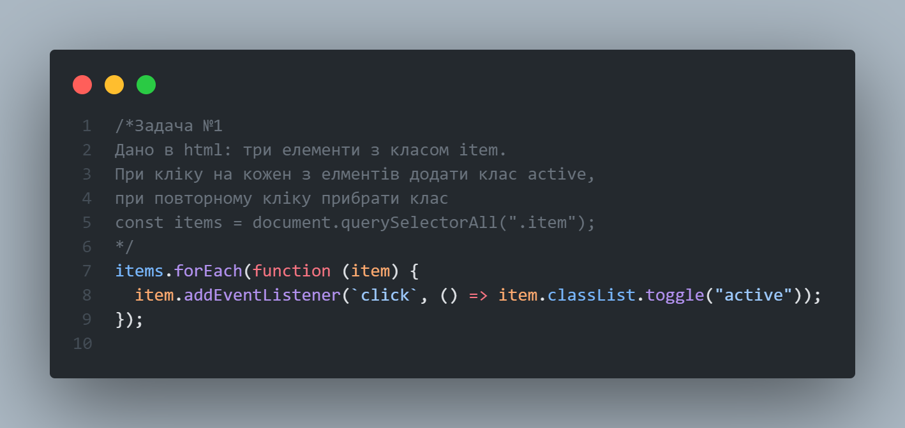
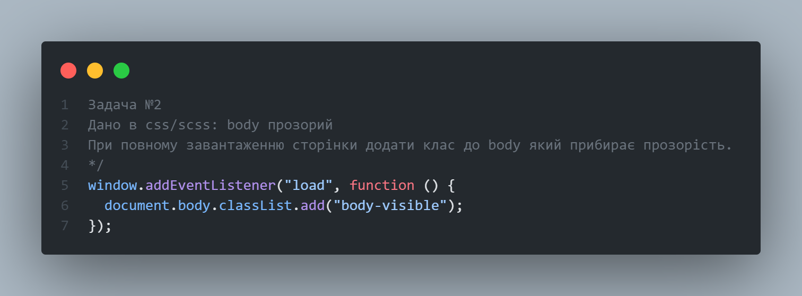
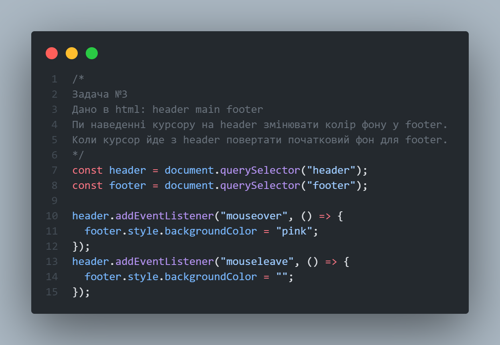

Урок № 23
"Основи JavaScript частина 3"
Задача №1
Дано в html: три елементи з класом item.
При кліку на кожен з елментів додати клас active,
при повторному кліку прибрати клас
const items = document.querySelectorAll(".item");

Задача №2
Дано в css/scss: body прозорий
При повному завантаженню сторінки додати клас до body який
прибирає прозорість.

Задача №3
Дано в html: header main footer
Пи наведенні курсору на header змінювати колір фону у footer.
Коли курсор йде з header повертати початковий фон для footer.
